mHandicap
A golf handicap app whose number can be trusted like a signed paper card.App handicap golf với một con số đáng tin như tấm thẻ giấy có chữ ký.
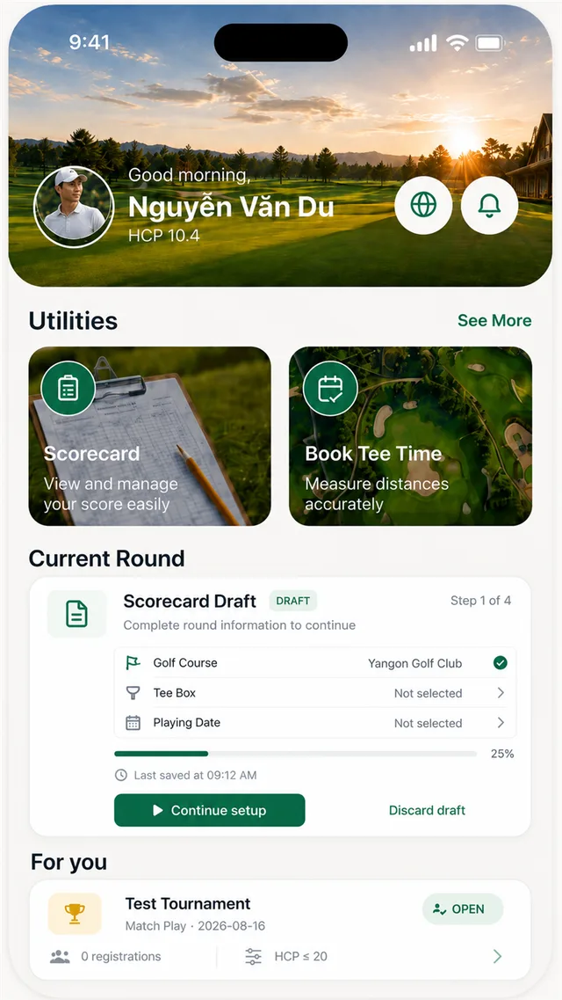
- RoleVai trò
- UX/UI designer, app and admin CMSUX/UI designer, app và CMS quản trị
- CompanyCông ty
- Jarvis Global, 2026Jarvis Global, 2026
- SizeQuy mô
- 68 screens, 37 documented components68 màn hình, 37 component có tài liệu
- LanguagesNgôn ngữ
- Vietnamese, English, MyanmarViệt, Anh, Myanmar
The problemBài toán
Typing 18 holes for up to four players takes 5 to 10 minutes on a phone. So golfers skip it, and their index drifts.Nhập 18 hố cho tối đa bốn người mất 5 đến 10 phút trên điện thoại. Thế là người chơi bỏ qua, và chỉ số sai dần.
- Free golferNgười chơi miễn phíLooks up courses and handicaps, books tee times, finds clubs and friends.Tra sân và handicap, đặt giờ chơi, tìm câu lạc bộ và bạn chơi.
- Premium golferHội viên PremiumHas a federation code. Enters scores, gets an index and plays tournaments.Có mã liên đoàn. Nhập điểm, có chỉ số và tham gia giải đấu.
- Scorer and card ownerNgười ghi và chủ thẻOne person enters for up to four players. Each owner confirms or rejects within 7 days.Một người nhập cho tối đa bốn người. Mỗi chủ thẻ xác nhận hoặc từ chối trong 7 ngày.
One screen, five decisionsMột màn hình, năm quyết định
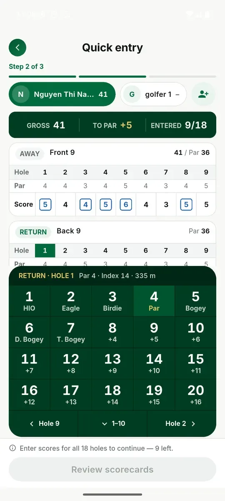
1Two players, one screenHai người, một màn hình
The scorer switches player at the top, and each chip carries its running total. Nobody leaves the hole to check someone else.Người ghi đổi người chơi ngay trên đầu, mỗi thẻ tên mang sẵn tổng điểm. Không ai phải rời hố để xem người khác.
2The round never leavesVòng chơi luôn ở đó
Gross, to par and holes entered stay visible. A missing course rating turns this bar into a warning that the round will not count.Tổng gậy, so với par và số hố đã nhập luôn hiển thị. Thiếu chỉ số sân thì thanh này thành cảnh báo vòng sẽ không được tính.
3The pad sits where the thumb isBàn phím nằm dưới ngón cái
The brief asks for one-handed use outdoors, so the keys fill the bottom of the screen, five to a row.Yêu cầu là dùng một tay ngoài trời, nên phím phủ phần dưới màn hình, năm phím một hàng.
4Golf words on the keysTừ của dân golf trên phím
Each key carries its par-relative word: HIO, Eagle, Birdie, Par, Bogey. A tap records the score and moves to the next hole.Mỗi phím mang từ tương ứng với par: HIO, Eagle, Birdie, Par, Bogey. Một chạm là ghi điểm và sang hố tiếp theo.
5The button says what is missingNút nói rõ còn thiếu gì
Review is mandatory and needs 18 holes. While it is locked, the line above says how many are left.Bắt buộc xem lại và đủ 18 hố. Khi nút còn khóa, dòng phía trên ghi còn thiếu mấy hố.
Flows, with the rule behind each stepLuồng, và quy tắc sau mỗi bước
Enter a scoreNhập điểm
From the home grid to a submitted card.Từ trang chủ tới thẻ điểm đã gửi.
Book a tee timeĐặt giờ chơi
Five steps from a slot to a booking code.Năm bước từ chọn giờ tới mã đặt chỗ.
Four steps to a score, and the app in MyanmarBốn bước nhập điểm, và app bằng tiếng Myanmar
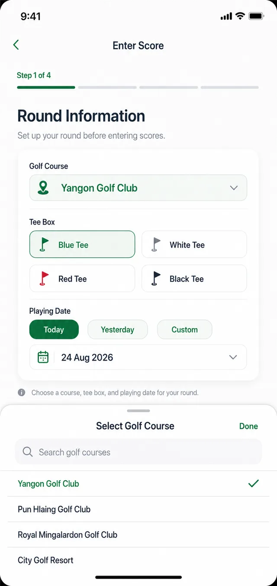
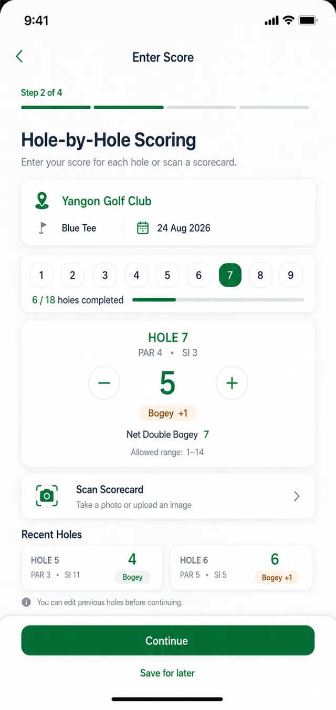
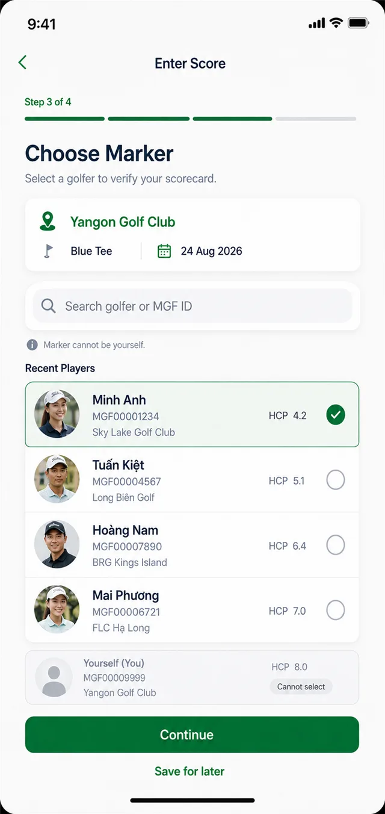

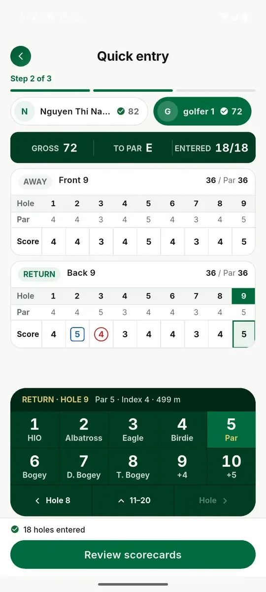
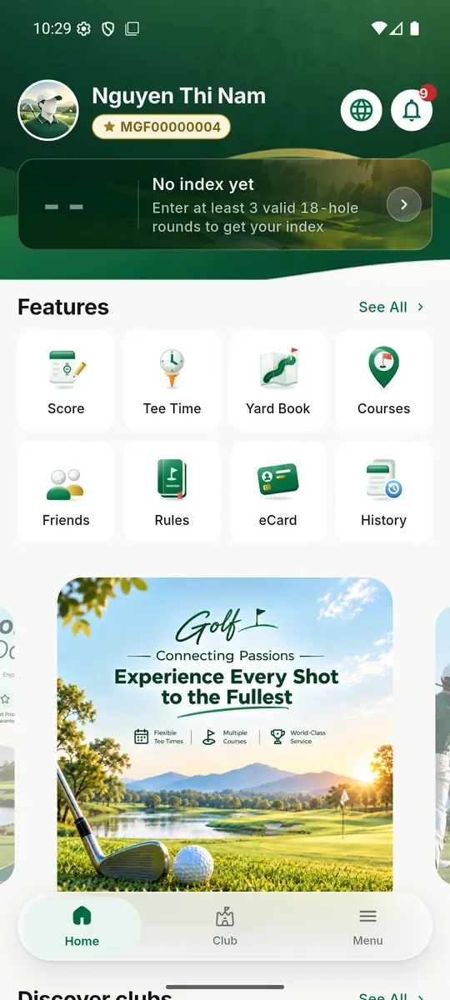
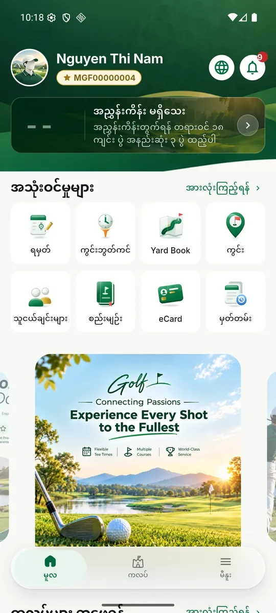
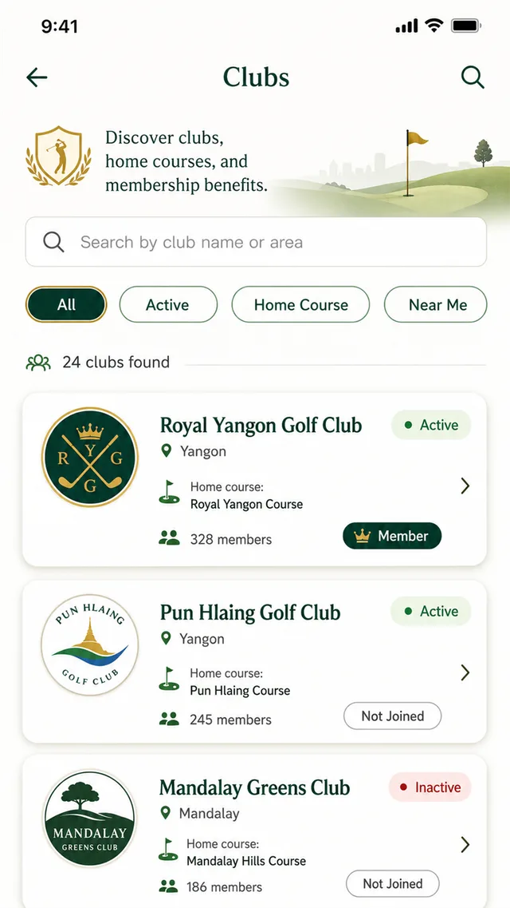
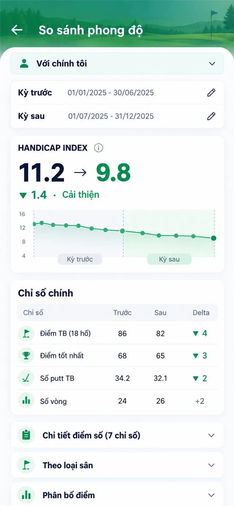
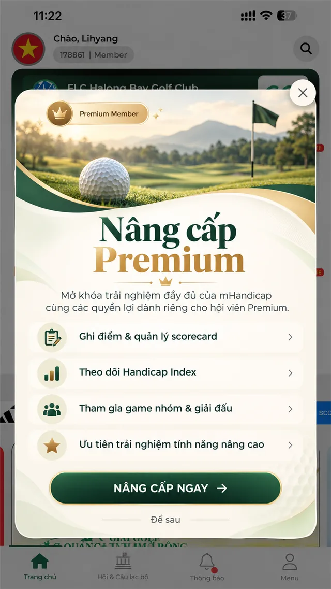
States that have a screenCác trạng thái đã có màn hình
- Loading skeletonKhung xương khi tải
- EmptyTrống
- Error with retryLỗi kèm thử lại
- Offline bannerBáo ngoại tuyến
- Premium sheetBảng Premium
- Missing rating warningCảnh báo thiếu chỉ số sân
- Card draftThẻ nháp
- Card pendingThẻ chờ
- Card verifiedThẻ đã xác nhận
- Card rejectedThẻ bị từ chối
- Card expiredThẻ hết hạn
What was deliveredĐã làm được
- A design system at v1.5 with 37 components and 10 templates, approvedDesign system v1.5 gồm 37 component và 10 mẫu màn hình, đã duyệt
- Quick entry and the mandatory review step, shipped in the running appNhập nhanh và bước xem lại bắt buộc, đã có trong app đang chạy
- Primary green at 6.63:1 on white, up from 3.36:1Xanh chính đạt tương phản 6,63:1 trên nền trắng, trước đó là 3,36:1
Not proven yetChưa được chứng minh
- Interview golfers and scorersPhỏng vấn người chơi và người ghi điểm
- Time a full round against the 5 to 10 minute claimĐo thời gian nhập một vòng so với mốc 5 đến 10 phút
- Reconcile the spec, which says keys 1 to 9, with the shipped 1 to 10Thống nhất tài liệu (phím 1 đến 9) với bản đã làm (1 đến 10)